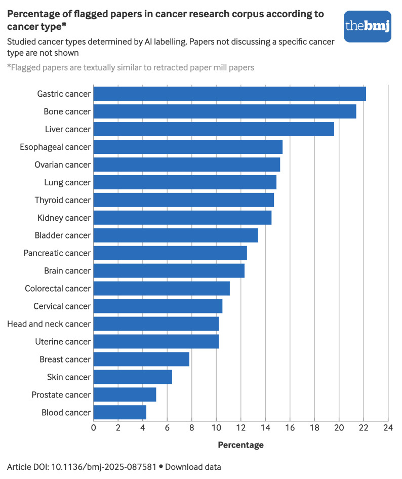
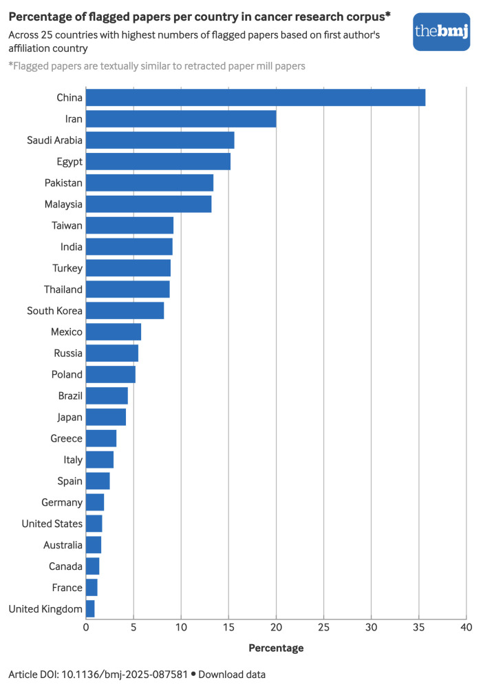

Executive Summary
A 2026 study published in the BMJ ran a single pass over 2.64 million cancer research papers published between 1999 and 2024. The tool, built by Adrian Barnett's team at Queensland University of Technology in Australia, is a BERT-based classifier that reads only a paper's title and abstract to judge whether it is fabricated. The result was sobering: 260,000 papers, 9.87% of the total, matched the fingerprint of a so-called paper mill. But what the detector found raises a question just as pressing: what does it structurally fail to find?
Stop there and you have only half the story. The detector's accuracy was reported at 91%, but that 91% is accuracy against yesterday's style of fraud. The fabricated papers it trained on followed formulaic templates, and the detector learned the fingerprint of that prose. Now that generative AI can churn out fake papers on demand, the template itself is dissolving. Passing the detector does not mean a paper is clean.
Why this matters to data practitioners comes down to one thing. This contaminated corpus is the very source of knowledge that AI trains on, that RAG systems retrieve from, and that physicians cite. If even the tool built to measure the contamination misses a sizeable share, with what confidence are we swallowing this corpus whole?
9.87%
Flagged as paper mill
261,245 of 2.64M papers — roughly one in ten
91%
Detector accuracy
On the validation set — but accuracy against yesterday's fake templates
2×
Citations of flagged papers
Versus clean papers — contamination that amplifies itself
19/20
Journals with flags
Of the top 20 journals examined — only one was the exception
260K in a Corpus of 2.6M
Start with the scale. The team scanned 2,647,471 cancer research papers published between 1999 and 2024, and flagged 261,245 of them as suspected paper-mill products. That is 9.87%, roughly one in ten. This is not the careless slip of an individual researcher; it is the trace left by an industrialized fraud business that buys and sells authorship slots like commodities.
More striking is the trajectory over time. In the early 2000s the suspected-contamination rate hovered around 1%, but it climbed steadily to about 16% by 2022. Some fields are worse. In liver, stomach, and bone cancer research, the suspected rate reaches 20–22%.

The comfortable assumption that this is a problem of low-quality journals collapses too. Of the top 20 journals the team examined, 19 turned up flagged papers; the sole exception was Nature Cancer. Even journals in the top 10% by impact factor were not a safe zone. The regional skew is pronounced as well. More than 170,000 papers from China-affiliated institutions were flagged — about 36% of China's total cancer research output (related coverage: ScienceDaily, ecancer).

There is a reason for that skew. Paper mills target not the large, hard-to-verify clinical trials but molecular cancer biology and early-stage lab studies, where plausible results are easy to fabricate. The more a field is squeezed by publish-or-perish pressure, the more demand pools around buying authorship. The skew in the numbers is a map of where fraud is easiest.
What BERT Caught and Missed
The detector's design is surprisingly simple. It takes as input only the title and abstract text, not the body or the figures. It is a BERT classifier fine-tuned on a balanced pairing of 2,202 known paper-mill papers registered in the Retraction Watch database and 2,202 papers presumed clean. After splitting the data into training, tuning, and internal validation, the team also ran an external validation on a suspect set independently selected by an image-integrity expert. The accuracy from all this was 91%.
Reading only the title and abstract comes at a price. It let the team scan 2.64 million papers quickly, but any trace buried deep in the body — manipulated figures, fabricated experimental data — was out of view from the start. The team ran that external validation on a separately curated set precisely because they knew text alone leaves blind spots.
The real question is what the number 91% does and does not guarantee. Accuracy is simply the share of correct calls; it is a different metric from recall, which measures how few fabricated papers slip through. The original paper in fact includes a table characterizing its false negatives — the distribution of fabricated papers the detector missed, broken down by publication year, publisher, first-author country, and cancer type.
What that table says is unmistakable. The detector systematically misses certain types of fabricated paper. Because the misses are not random but cluster around specific years, publishers, countries, and cancer types, the data itself testifies that "passing = clean" does not hold. Among the papers that passed, some carry fraud the detector never caught.
Passing Is Not a Clean Bill of Health
What is telling is that the person stating this limitation most plainly is the researcher who built the tool. Barnett likened his detector to "a spam filter for science." Just as an email spam filter never catches spam perfectly, this tool's passes and blocks are not perfect either.
The sentence he offered pins down the tool's epistemic standing exactly. It is not 100% proof but a quick, simple signal telling editors and reviewers to "take another look at this paper and search for other signs of a paper mill." The detector's output is not a guilty verdict; it is a re-review priority.
This lands squarely on an old principle of data quality. A validation tool does not guarantee trustworthiness. It only sets a priority for where to look first. Just as an unflagged paper has not been proven innocent, data that passes a validation pipeline has not been certified for quality. The moment you conflate the two, validation degrades into a stamp that sells reassurance (Inside Precision Medicine).
Citations Breeding Citations
The real reason contamination is dangerous is that it does not sit still. According to Nature's coverage, flagged papers receive on average twice as many citations as clean ones. In some journals, 57% of all citations came from flagged papers. Paper-mill papers cite one another, spinning a self-amplifying loop that inflates citation counts and journal impact factors themselves.
Why did it grow this large? A paper mill is an industry that sells a paper's authorship slots as commodities. An analysis of roughly 19,000 online advertisements found authorship prices ranging from $36 to $5,600, with first-author slots averaging $1,030. Where there is demand, supply industrializes — and industrialized fabrication crowds clean papers out of the citation market.
- ·Doubled citations. Flagged papers receive about twice the citations of clean papers.
- ·Concentrated citations. In some journals, 57% of the citations received came from flagged papers.
- ·A market with a price list. Authorship slots run $36–$5,600; first-author slots average $1,030.
What makes this loop frightening is that the corpora AI trains on, and the reference lists doctors treat as evidence, usually use citation counts as a trust signal. If the more-cited paper rises to the top, the contaminated paper takes the most visible seat instead.
When the Template Disappears
The chilliest sentence in Barnett's warning takes aim at the tool's shelf life. His system worked because past paper mills followed formulaic templates — and now, in an era of churning out papers with generative AI, those templates are disappearing. As the "stylistic fingerprint of fraud" the detector learned gets erased, there is no guarantee today's 91% holds tomorrow.
This article's starting point pairs with an earlier story. If 300 million papers opened for free was a story about how much wider the scholarly corpus has grown (quantity), this episode is a story about how contaminated that corpus is (quality). It goes one step further as a double structure that includes the limits of the tool measuring the contamination itself. Feed the widened corpus into an AI pipeline without validation, and the contamination spreads through training data and RAG knowledge bases into the final answer.
So the question that remains is not about a tool's performance but about a stance. The principle Pebblous keeps repeating when it talks about data quality is that "the fact of having passed validation is itself subject to validation." A detector's flag is the starting point of re-review, not a conclusion; passing is not proof of cleanliness, only the state of not having been caught yet. When we handle the source of knowledge that AI trains on and doctors cite, what we need is not a smarter single detector but a validation layer that cross-checks multiple signals and is designed around the limits of recall.
What lingers longer than the figure that one in ten cancer papers is suspected fraud is the fact that even the tool built to filter it out systematically misses certain kinds of fraud. Data quality is not decided by whether the source is virtuous. It is decided by what you validated, and how, before you let the data in.
References
Academic Paper
- 1.Scancar, B., Byrne, J. A., Causeur, D., & Barnett, A. G. (2026). Machine learning based screening of potential paper mill publications in cancer research: methodological and cross sectional study. The BMJ, 392, e087581. doi.org/10.1136/bmj-2025-087581
News & Industry Sources
- 2.ScienceDaily. (2026-07-14). AI flags more than 250,000 suspicious cancer research papers. sciencedaily.com
- 3.ecancer. (2026). New tool exposes scale of fake research flooding cancer science. ecancer.org
- 4.Nature. (2026). Paper mill cancer studies get double the number of citations as genuine papers. nature.com
- 5.Inside Precision Medicine. (2026). Paper Mills and the Fight Against Scientific Fraud. insideprecisionmedicine.com